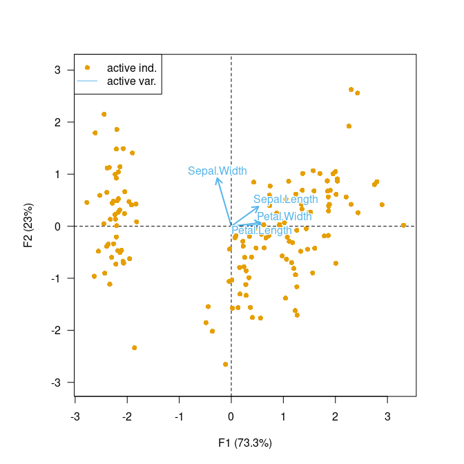
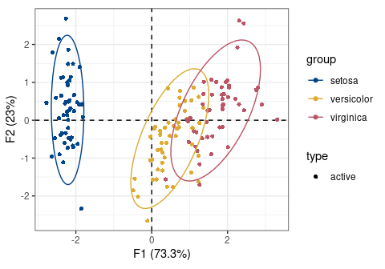
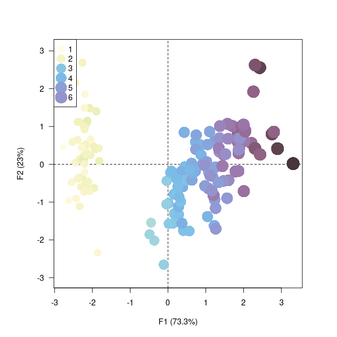
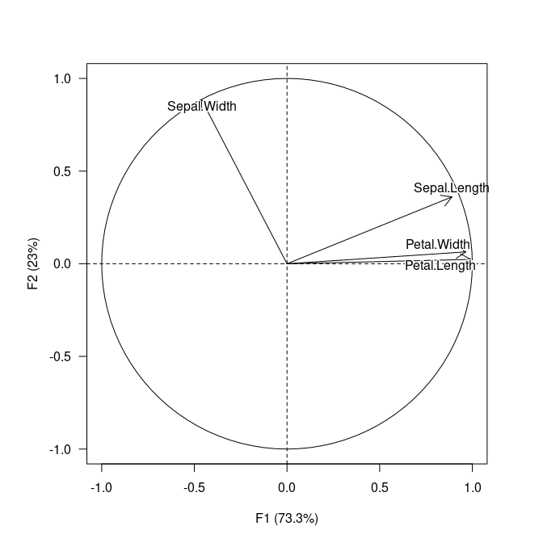
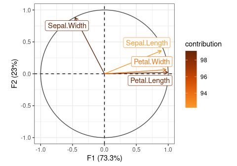

Overview
Simple Principal Components Analysis (PCA; see vignette("pca")) and (Multiple) Correspondence Analysis (CA) based on the Singular Value Decomposition (SVD). This package provides S4 classes and methods to compute, extract, summarize and visualize results of multivariate data analysis. It also includes methods for partial bootstrap validation.
There are many very good packages for multivariate data analysis (such as FactoMineR, ade4, vegan or ca, all extended by FactoExtra). dimensio is designed to be as simple as possible, providing all the necessary tools to explore the results of the analysis.
To cite dimensio in publications use:
Frerebeau N (2024). dimensio: Multivariate Data Analysis. Université Bordeaux Montaigne, Pessac, France. doi:10.5281/zenodo.4478530 https://doi.org/10.5281/zenodo.4478530, R package version 0.8.0, https://packages.tesselle.org/dimensio/.
This package is a part of the tesselle project https://www.tesselle.org.
Installation
You can install the released version of dimensio from CRAN with:
install.packages("dimensio")And the development version from GitHub with:
# install.packages("remotes")
remotes::install_github("tesselle/dimensio")Usage
## Install extra packages (if needed)
# install.packages("khroma") # Color schemes
## Load packages
library(dimensio)Extract
dimensio provides several methods to extract the results:
-
get_data()returns the original data. -
get_contributions()returns the contributions to the definition of the principal dimensions. -
get_coordinates()returns the principal or standard coordinates. -
get_correlations()returns the correlations between variables and dimensions. -
get_cos2()returns the cos2 values (i.e. the quality of the representation of the points on the factor map). -
get_eigenvalues()returns the eigenvalues, the percentages of variance and the cumulative percentages of variance.
Visualize
The package allows to quickly visualize the results:
-
biplot()produces a biplot. -
screeplot()produces a scree plot. -
viz_rows()/viz_individuals()displays row/individual principal coordinates. -
viz_columns()/viz_variables()displays columns/variable principal coordinates.viz_variables()depicts the variables by rays emanating from the origin (both their lengths and directions are important to the interpretation). -
viz_contributions()displays (joint) contributions. -
viz_cos2()displays (joint) cos2.
The viz_*() functions allow to highlight additional information by varying different graphical elements (color, transparency, shape and size of symbols…).
## Form biplot
biplot(X, type = "form")
## Highlight species
viz_individuals(
x = X,
highlight = iris$Species,
symbol = 16,
color = c("#004488", "#DDAA33", "#BB5566")
)
## Add ellipses
viz_tolerance(
x = X,
group = iris$Species,
level = 0.95,
border = c("#004488", "#DDAA33", "#BB5566")
)
## Highlight petal length
viz_individuals(
x = X,
highlight = iris$Petal.Length,
color = khroma::color("iridescent")(255),
size = c(1, 2),
symbol = 16
)

## Plot variables factor map
viz_variables(X)
## Scree plot
screeplot(X, eigenvalues = FALSE, cumulative = TRUE)

Contributing
Please note that the dimensio project is released with a Contributor Code of Conduct. By contributing to this project, you agree to abide by its terms.